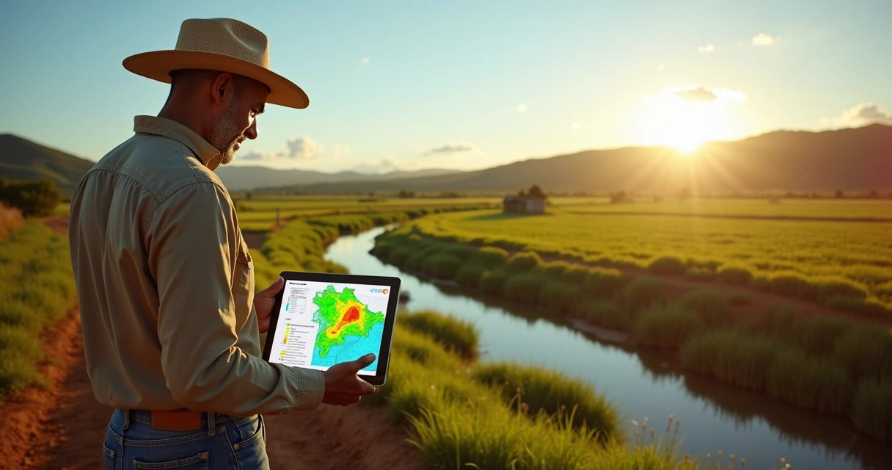

Quem acompanha o campo e trabalha diretamente com propriedades rurais já percebeu o quanto a regularização ambiental ganhou protagonismo nos últimos anos. Em muitos encontros e conversas com produtores, percebo que o Cadastro Ambiental Rural (CAR) ainda gera dúvidas, resistência ou até receios. Mas, na prática, o CAR pode ser um divisor de águas para quem deseja segurança jurídica, acesso a crédito e valorização imobiliária.
Neste artigo, quero compartilhar minha visão, com base em pesquisas e experiência na área jurídica, sobre como o registro no CAR pode ser um grande aliado do produtor rural. Vou mostrar os principais motivos que me levam a recomendar o CAR como uma ferramenta obrigatória para qualquer gestor de imóvel rural. E, claro, trazer o olhar do Henrique Posser Advocacia sobre a regularização ambiental e a tranquilidade que ela proporciona no cotidiano do campo.
O que é o Cadastro Ambiental Rural (CAR)?
Antes de mais nada, é importante explicar o conceito do CAR de maneira simples e objetiva. O CAR é um registro eletrônico obrigatório para todos os imóveis rurais no Brasil, criado pela Lei nº 12.651/2012, conhecida como Novo Código Florestal. Esse cadastro reúne informações ambientais das propriedades e tem como objetivo mapear áreas como reservas legais, Áreas de Preservação Permanente (APPs), áreas consolidadas e passivos ambientais.
Em minhas consultorias, vejo que preencher o CAR vai além de ser uma mera obrigação: é o passo inicial para inserir o imóvel na “legalidade ambiental” perante órgãos e instituições.
Registro, mapeamento e transparência para o campo brasileiro.
O CAR é nacional, integrado com sistemas estaduais e municipais, e é o ponto de partida para políticas públicas ambientais.
Obrigatoriedade e consequências para quem não cumpre
Desde 2014, todo proprietário rural deve registrar sua área no CAR. Ignorar essa obrigação pode trazer uma série de consequências práticas, que vão de multas pesadas à dificuldade de conseguir financiamento ou vender o imóvel.
Já atendi clientes que descobriram a importância do CAR somente quando foram impedidos de obter crédito ou enfrentar um bloqueio na comercialização de seus produtos. Por isso, sempre oriento que regularizar é mais fácil, rápido e econômico do que remediar depois.
Principais vantagens do CAR para o produtor rural
Agora, queria pontuar as principais vantagens que observo no dia a dia de quem realiza o cadastro ambiental da propriedade:
- Acesso ao crédito rural e seguros
- Benefícios fiscais
- Regularização e segurança jurídica
- Suspensão de multas ambientais
- Participação em programas públicos como o PRA
- Valorização imobiliária
- Facilitação do licenciamento ambiental
- Comercialização de Cotas de Reserva Ambiental (CRA)
- Gestão de áreas protegidas
Cada uma dessas vantagens se desdobra para diferentes perfis de produtores e tamanhos de propriedade. Da pequena agricultura familiar aos grandes empreendimentos, o CAR se evidencia como estratégico.
Acesso a crédito, seguro rural e incentivos financeiros
O crédito rural é indispensável para investir, inovar e superar períodos de baixa produção. O que pouca gente sabe é que já é uma exigência legal a apresentação do CAR na hora de buscar financiamento em bancos públicos ou privados. Sem o CAR ativo e regular, a obtenção de crédito muitas vezes é simplesmente bloqueada.
Alguns programas de seguro rural também exigem o cadastro ambiental regularizado. A lógica é simples: quem demonstra atenção ao meio ambiente passa mais confiança às instituições. Isso abre portas para condições melhores e até descontos em taxas.
O Ceará é destaque no Nordeste ao finalizar milhares de análises do CAR, permitindo que produtores tenham acesso facilitado a benefícios governamentais e investimentos produtivos. Essa experiência corrobora o que tenho presenciado: regularização traz liquidez financeira.
Benefícios fiscais e ambientais: duplo resultado
Outra vantagem clara do cadastro ambiental é a possibilidade de acessar incentivos fiscais e fiscais ambientais. Em alguns estados, imóveis rurais cadastrados e regulares no CAR têm abatimentos em impostos como o ITR (Imposto sobre a Propriedade Territorial Rural) e prioridade em programas ambientais de apoio técnico.
Além disso, o Código Florestal prevê, como fonte de incentivo, a suspensão de multas ambientais e redução dos valores para quem aderir ao Programa de Regularização Ambiental (PRA) após a inscrição no CAR, desde que cumpra as exigências ambientais.
Regularização gera benefícios fiscais concretos.
Esses estímulos têm se mostrado eficazes para incentivar o produtor a buscar a conformidade voluntariamente.
Segurança jurídica e regularização ambiental
A regularização ambiental é, sem dúvida, um dos maiores ganhos para o produtor. Não se trata apenas de evitar multas, mas de garantir tranquilidade em processos de fiscalização e licenciamento futuro.
Sempre enfatizo na atuação do Henrique Posser Advocacia que um imóvel rural regular pode ser transferido, vendido ou arrendado sem sobressaltos, já que essas operações frequentemente exigem a apresentação do cadastro ambiental regularizado.
O CAR funciona também como uma espécie de “RG ambiental” da propriedade, conferindo credibilidade e transparência a negociações e contratos.
Sustentabilidade e reputação internacional
O CAR não tem impacto apenas dentro do Brasil. Cada vez mais, o mercado internacional exige que os produtos do campo respeitem regras mínimas de preservação ambiental. Propriedades cadastradas e regulares atendem compromissos de sustentabilidade e podem conquistar mercados mais exigentes, como União Europeia e Ásia.
Já fui procurado por produtores que perderam contratos de exportação porque não conseguiram comprovar regularidade ambiental. O valor de mercado de uma produção é muito maior quando existe rastreabilidade e respeito às normas ecológicas.
Segundo estudo publicado na revista Oecologia Australis, o CAR é amplamente utilizado em pesquisas de Ecologia e Conservação no Brasil, sendo valorizado em estudos científicos internacionais. Isso reforça a confiança global na rastreabilidade promovida pelo cadastro.
Valorização imobiliária e facilidade em negociações
Quem já tentou vender ou transferir um imóvel rural sabe: se o CAR não estiver em dia, praticamente nenhuma negociação avança. A tendência do mercado imobiliário rural é valorizar propriedades “limpas”, isentas de passivos ambientais.
Eu costumo dizer em reuniões que o valor de uma fazenda regular é, sim, superior àquele de propriedade irregular. A razão é lógica: o comprador não herda potenciais multas, embargos ou “pendências ambientais”. Uma consulta rápida ao CAR já revela a situação ambiental do imóvel e pode ser um diferencial para o proprietário.
Propriedade regular valorizada e pronta para novos negócios.
Em situações de inventário e sucessão familiar, cenários onde o Henrique Posser Advocacia atua com frequência —, a ausência do cadastro pode travar todo o processo de partilha.
Licenciamento ambiental e comercialização de Cotas de Reserva Ambiental
Outra vantagem frequentemente negligenciada é a agilidade no licenciamento ambiental. O CAR é o primeiro documento solicitado ao abrir processos para construção, irrigação, criação de lagoas ou expansão de lavoura legal.
Além disso, o produtor pode se beneficiar da comercialização de Cotas de Reserva Ambiental (CRA). Essas cotas representam áreas preservadas, reconhecidas oficialmente, e podem ser negociadas, gerando receita extra para proprietários preservacionistas e soluções para quem precisa compensar déficit de vegetação nativa.
Impacto do CAR na gestão e planejamento ambiental
O cadastro ambiental permite uma visão detalhada da propriedade, identificando áreas com passivo ambiental, excesso ou falta de reserva e locais propícios para reflorestamento.
Meu conselho para os clientes é sempre usar o CAR como ponto de partida para um planejamento ambiental inteligente. Com os dados precisos, o proprietário pode tomar decisões sobre produção, preservação e maximização do uso do solo, sem correr riscos legais.
Documentos básicos para inscrição do CAR
Quem quer se cadastrar precisa separar:
- Documento de posse ou propriedade (escritura, matrícula, etc.)
- CPF ou CNPJ do dono(s)
- Informações detalhadas de localização (georreferenciamento, mapas, coordenadas GPS)
- Desenho da área a ser cadastrada, indicando APPs e reservas
- Dados do responsável técnico, quando aplicável
O processo é feito online e, em alguns casos, é recomendável acompanhamento técnico ou jurídico, como oferecemos no Henrique Posser Advocacia, para garantir que todos os dados estejam coerentes e legalmente seguros.
O avanço do CAR no Brasil: automação e análise em massa
O Brasil deu um salto enorme na análise dos cadastros ambientais nos últimos anos. Por exemplo, a parceria entre o Serviço Florestal Brasileiro e estados permitiu a análise de mais de 180 mil processos em apenas seis meses, cerca de 34% de todo o volume revisado ao longo de sete anos anteriores, graças à automação do sistema AnalisaCAR (mais informações oficiais).
Isso mostra que o sistema brasileiro está sendo fortalecido e que a validação dos cadastros tende a acontecer de forma cada vez mais confiável para o produtor sério.
Consequências da não regularização
Infelizmente, ainda vejo muitos casos de produtores que ignoram o CAR e, por isso, ficam sujeitos a:
- Multas, embargos e interdições pela fiscalização ambiental
- Impedimento de obtenção de empréstimos bancários
- Dificuldade para licenciamento e aprovação de projetos
- Desvalorização imediata do imóvel
- Falta de acesso a programas de manejo, incentivo ou benefício público
- Danos à reputação frente ao mercado e compradores
Em situações de partilha de bens, a ausência do cadastro pode impedir a finalização do inventário, fato que já vivenciei em escritórios especializados. Por isso, mostrar o CAR como ferramenta estratégica é até uma forma de respeito à família e ao patrimônio construído com esforço.
Como o CAR contribui para diferentes perfis de produtor
Não importa se sua propriedade tem poucos hectares ou milhares: o cadastro traz vantagens diretas e indiretas para todos.
- Pequenos produtores: acesso a microcrédito, isenção de multas, priorização em projetos de apoio do governo.
- Médios: abertura para parcerias comerciais e acesso facilitado à regularização fundiária.
- Grandes: segurança em licenciamento, exportação, acesso a CRA e sustentabilidade reconhecida internacionalmente.
Vivenciei isso em diversos casos, onde simples regularização do CAR transformou a capacidade de investimento e valorização patrimonial dos produtores, aumentando confiança junto a bancos e compradores.
Conclusão: o CAR como aliado estratégico do produtor rural
Agora que apresentei as vantagens do CAR para quem é proprietário rural, meu conselho é ver o cadastro ambiental como investimento em proteção jurídica, desenvolvimento sustentável, e valorização do patrimônio familiar. Regularizar-se é hoje mais do que cumprir uma imposição legal; é condição para crescer, acessar mercados e garantir o futuro do campo.
No escritório Henrique Posser Advocacia, tenho orgulho de ajudar proprietários rurais a trilhar esse caminho da regularização, sempre pensando na segurança e tranquilidade de cada decisão. Se você deseja atuar com serenidade e aproveitar todas as oportunidades do campo, conheça nossos serviços e tire suas dúvidas. Estar regular é o primeiro passo para conquistar novos horizontes na atividade rural.
Perguntas frequentes sobre o CAR
O que é o CAR para produtores rurais?
O Cadastro Ambiental Rural é um registro eletrônico obrigatório para imóveis rurais, criado para mapear áreas de preservação, reservas legais e áreas produtivas, reunindo informações essenciais para a legalidade ambiental. Esse cadastro auxilia na organização e no reconhecimento oficial da situação ambiental da propriedade.
Como faço para regularizar meu imóvel rural?
Para regularizar, reúna os documentos essenciais como matrícula, CPF/CNPJ e mapas detalhados. Depois, acesse o sistema oficial do CAR e preencha as informações solicitadas, preferencialmente com apoio de orientação técnica ou jurídica especializada, garantindo a coerência e atualização dos dados declarados.
Quais os benefícios do CAR para o proprietário rural?
Registrar o imóvel no CAR oferece acesso ao crédito rural, benefícios fiscais, suspensão de multas ambientais, participação em programas como o PRA, facilidade em licenciamentos ambientais e valorização imobiliária. Além disso, reforça a reputação do produtor e a segurança jurídica da propriedade.
Vale a pena cadastrar minha propriedade no CAR?
Sim, vale muito a pena. O CAR é obrigatório, agrega valor ao imóvel, facilita o acesso a linhas de crédito e evita sanções legais. Além disso, proporciona oportunidades de conservação ambiental e participação em programas governamentais de incentivo e regularização.
Quanto custa fazer o CAR de uma propriedade?
O cadastro oficial no sistema é gratuito, mas pode haver custos com contratação de profissionais para levantamento técnico, mapas digitais e assessoria jurídica. O investimento varia conforme o tamanho e a complexidade do imóvel, sendo, na maioria das vezes, acessível diante da proteção e vantagens oferecidas.